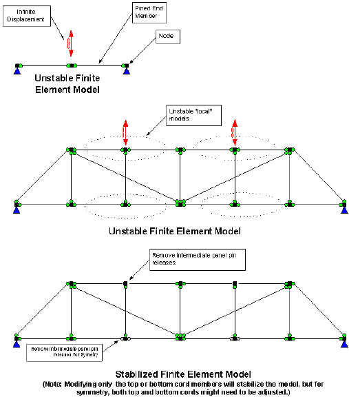

Truss Member End Releases
WSDOT general policy is to first analyze a truss with all connections pinned. If the truss fails, then the engineer has the option to review the specifications of the connections and change those that warrant it, to moment connections. The challenge to the user is to create a model of the truss with all connections pinned that is still a valid and stable finite element model. For simple trusses, this is not a problem, but the more complex structures will require judicious and well thought out member end moment release specifications. The following graphic shows a typical problem that can occur. An unstable model might run without an error message about the stiffness matrix being unstable. Because of this, it is always best to check the displacement plots and report data for reasonableness.
